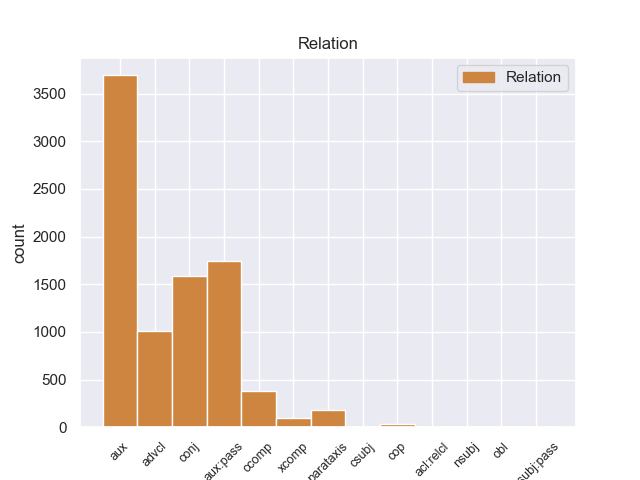
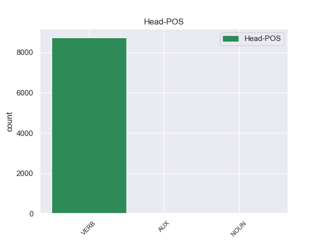
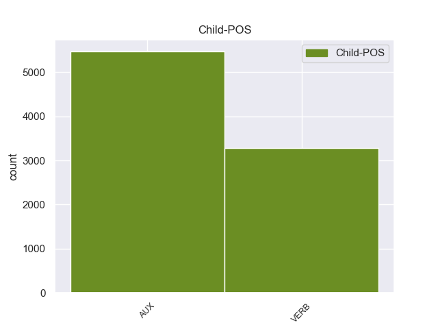

Distribution of features within this leaf



Agreement Rules sorted by frequency.
- When the dependent token is the conjunct(conj) of the head token,
1 Durante _ _ _ _ 0 _ _ _
2 il _ _ _ _ 0 _ _ _
3 terremoto _ _ _ _ 0 _ _ _
4 in _ _ _ _ 0 _ _ _
5 Iran _ _ _ _ 0 _ _ _
6 , _ _ _ _ 0 _ _ _
7 sono _ _ _ _ 0 _ _ _
8 morte morire VERB V Gender=Fem|Number=Plur|Tense=Past|VerbForm=Part 0 _ _ _
9 moltissime _ _ _ _ 0 _ _ _
10 persone _ _ _ _ 0 _ _ _
11 e _ _ _ _ 0 _ _ _
12 il _ _ _ _ 0 _ _ _
13 centro _ _ _ _ 0 _ _ _
14 storico _ _ _ _ 0 _ _ _
15 di _ _ _ _ 0 _ _ _
16 la _ _ _ _ 0 _ _ _
17 città _ _ _ _ 0 _ _ _
18 di _ _ _ _ 0 _ _ _
19 Bam _ _ _ _ 0 _ _ _
20 è _ _ _ _ 0 _ _ _
21 stato _ _ _ _ 0 _ _ _
22 completamente _ _ _ _ 0 _ _ _
23 distrutto distruggere VERB V Gender=Masc|Number=Sing|Tense=Past|VerbForm=Part 8 conj 8:conj:e SpaceAfter=No
24 . _ _ _ _ 0 _ _ _
1 Durante _ _ _ _ 0 _ _ _
2 il _ _ _ _ 0 _ _ _
3 terremoto _ _ _ _ 0 _ _ _
4 in _ _ _ _ 0 _ _ _
5 Iran _ _ _ _ 0 _ _ _
6 , _ _ _ _ 0 _ _ _
7 sono _ _ _ _ 0 _ _ _
8 morte _ _ _ _ 0 _ _ _
9 moltissime _ _ _ _ 0 _ _ _
10 persone _ _ _ _ 0 _ _ _
11 e _ _ _ _ 0 _ _ _
12 il _ _ _ _ 0 _ _ _
13 centro _ _ _ _ 0 _ _ _
14 storico _ _ _ _ 0 _ _ _
15 di _ _ _ _ 0 _ _ _
16 la _ _ _ _ 0 _ _ _
17 città _ _ _ _ 0 _ _ _
18 di _ _ _ _ 0 _ _ _
19 Bam _ _ _ _ 0 _ _ _
20 è _ _ _ _ 0 _ _ _
21 stato essere AUX VA Gender=Masc|Number=Sing|Tense=Past|VerbForm=Part 23 aux:pass 23:aux:pass _
22 completamente _ _ _ _ 0 _ _ _
23 distrutto distruggere VERB V Gender=Masc|Number=Sing|Tense=Past|VerbForm=Part 0 _ _ _
24 . _ _ _ _ 0 _ _ _
1 Quando _ _ _ _ 0 _ _ _
2 c’ _ _ _ _ 0 _ _ _
3 è essere VERB V Mood=Ind|Number=Sing|Person=3|Tense=Pres|VerbForm=Fin 8 advcl 8:advcl _
4 il _ _ _ _ 0 _ _ _
5 terremoto _ _ _ _ 0 _ _ _
6 la _ _ _ _ 0 _ _ _
7 terra _ _ _ _ 0 _ _ _
8 trema tremare VERB V Mood=Ind|Number=Sing|Person=3|Tense=Pres|VerbForm=Fin 0 _ _ _
9 e _ _ _ _ 0 _ _ _
10 si _ _ _ _ 0 _ _ _
11 muove _ _ _ _ 0 _ _ _
12 . _ _ _ _ 0 _ _ _
1 CapaRezza _ _ _ _ 0 _ _ _
2 ha _ _ _ _ 0 _ _ _
3 detto dire VERB V Gender=Masc|Number=Sing|Tense=Past|VerbForm=Part 0 _ _ _
4 di _ _ _ _ 0 _ _ _
5 aver _ _ _ _ 0 _ _ _
6 trasgredito trasgredire VERB V Gender=Masc|Number=Sing|Tense=Past|VerbForm=Part 3 ccomp 3:ccomp _
7 volutamente _ _ _ _ 0 _ _ _
8 la _ _ _ _ 0 _ _ _
9 regola _ _ _ _ 0 _ _ _
10 di _ _ _ _ 0 _ _ _
11 la _ _ _ _ 0 _ _ _
12 grammatica _ _ _ _ 0 _ _ _
13 latina _ _ _ _ 0 _ _ _
14 . _ _ _ _ 0 _ _ _
1 Durante _ _ _ _ 0 _ _ _
2 la _ _ _ _ 0 _ _ _
3 staffetta _ _ _ _ 0 _ _ _
4 , _ _ _ _ 0 _ _ _
5 i _ _ _ _ 0 _ _ _
6 nuotatori _ _ _ _ 0 _ _ _
7 fanno fare VERB V Mood=Ind|Number=Plur|Person=3|Tense=Pres|VerbForm=Fin 0 _ _ _
8 una _ _ _ _ 0 _ _ _
9 squadra _ _ _ _ 0 _ _ _
10 di _ _ _ _ 0 _ _ _
11 4 _ _ _ _ 0 _ _ _
12 persone _ _ _ _ 0 _ _ _
13 : _ _ _ _ 0 _ _ _
14 ogni _ _ _ _ 0 _ _ _
15 nuotatore _ _ _ _ 0 _ _ _
16 nuota nuotare VERB V Mood=Ind|Number=Sing|Person=3|Tense=Pres|VerbForm=Fin 7 parataxis 7:parataxis _
17 solo _ _ _ _ 0 _ _ _
18 per _ _ _ _ 0 _ _ _
19 una _ _ _ _ 0 _ _ _
20 parte _ _ _ _ 0 _ _ _
21 di _ _ _ _ 0 _ _ _
22 il _ _ _ _ 0 _ _ _
23 percorso _ _ _ _ 0 _ _ _
24 di _ _ _ _ 0 _ _ _
25 gara _ _ _ _ 0 _ _ _
26 . _ _ _ _ 0 _ _ _
1 Moltissimi _ _ _ _ 0 _ _ _
2 abitanti _ _ _ _ 0 _ _ _
3 di _ _ _ _ 0 _ _ _
4 Haiti _ _ _ _ 0 _ _ _
5 hanno _ _ _ _ 0 _ _ _
6 accusato accusare VERB V Gender=Masc|Number=Sing|Tense=Past|VerbForm=Part 0 _ _ _
7 Aristide _ _ _ _ 0 _ _ _
8 di _ _ _ _ 0 _ _ _
9 aver _ _ _ _ 0 _ _ _
10 imbrogliato imbrogliare VERB V Gender=Masc|Number=Sing|Tense=Past|VerbForm=Part 6 xcomp 6:xcomp _
11 per _ _ _ _ 0 _ _ _
12 vincere _ _ _ _ 0 _ _ _
13 le _ _ _ _ 0 _ _ _
14 elezioni _ _ _ _ 0 _ _ _
15 e _ _ _ _ 0 _ _ _
16 di _ _ _ _ 0 _ _ _
17 aver _ _ _ _ 0 _ _ _
18 fatto _ _ _ _ 0 _ _ _
19 diventare _ _ _ _ 0 _ _ _
20 Haiti _ _ _ _ 0 _ _ _
21 sempre _ _ _ _ 0 _ _ _
22 più _ _ _ _ 0 _ _ _
23 povera _ _ _ _ 0 _ _ _
24 . _ _ _ _ 0 _ _ _
1 Per _ _ _ _ 0 _ _ _
2 realizzare _ _ _ _ 0 _ _ _
3 queste _ _ _ _ 0 _ _ _
4 indicazioni _ _ _ _ 0 _ _ _
5 il _ _ _ _ 0 _ _ _
6 Ministro _ _ _ _ 0 _ _ _
7 si _ _ _ _ 0 _ _ _
8 è essere AUX VA Mood=Ind|Number=Sing|Person=3|Tense=Pres|VerbForm=Fin 9 aux 9:aux _
9 impegnato impegnato VERB V Mood=Imp|Number=Sing|Person=2|Tense=Pres|VerbForm=Fin 0 _ _ _
10 a _ _ _ _ 0 _ _ _
11 dare _ _ _ _ 0 _ _ _
12 più _ _ _ _ 0 _ _ _
13 soldi _ _ _ _ 0 _ _ _
14 a _ _ _ _ 0 _ _ _
15 gli _ _ _ _ 0 _ _ _
16 enti _ _ _ _ 0 _ _ _
17 locali _ _ _ _ 0 _ _ _
18 . _ _ _ _ 0 _ _ _
1 Fu _ _ _ _ 0 _ _ _
2 così _ _ _ _ 0 _ _ _
3 sancito sancire VERB V Gender=Masc|Number=Sing|Tense=Past|VerbForm=Part 0 _ _ _
4 che _ _ _ _ 0 _ _ _
5 il _ _ _ _ 0 _ _ _
6 ras _ _ _ _ 0 _ _ _
7 di _ _ _ _ 0 _ _ _
8 Cremona _ _ _ _ 0 _ _ _
9 , _ _ _ _ 0 _ _ _
10 il _ _ _ _ 0 _ _ _
11 condottiero _ _ _ _ 0 _ _ _
12 di _ _ _ _ 0 _ _ _
13 gli _ _ _ _ 0 _ _ _
14 squadristi _ _ _ _ 0 _ _ _
15 , _ _ _ _ 0 _ _ _
16 l' _ _ _ _ 0 _ _ _
17 unico _ _ _ _ 0 _ _ _
18 autentico _ _ _ _ 0 _ _ _
19 nazionalsocialista _ _ _ _ 0 _ _ _
20 italiano _ _ _ _ 0 _ _ _
21 ( _ _ _ _ 0 _ _ _
22 come _ _ _ _ 0 _ _ _
23 amava _ _ _ _ 0 _ _ _
24 definir _ _ _ _ 0 _ _ _
25 si _ _ _ _ 0 _ _ _
26 ) _ _ _ _ 0 _ _ _
27 , _ _ _ _ 0 _ _ _
28 colui _ _ _ _ 0 _ _ _
29 che _ _ _ _ 0 _ _ _
30 da _ _ _ _ 0 _ _ _
31 segretario _ _ _ _ 0 _ _ _
32 di _ _ _ _ 0 _ _ _
33 il _ _ _ _ 0 _ _ _
34 partito _ _ _ _ 0 _ _ _
35 aveva _ _ _ _ 0 _ _ _
36 avuto _ _ _ _ 0 _ _ _
37 la _ _ _ _ 0 _ _ _
38 capacità _ _ _ _ 0 _ _ _
39 riconosciuta _ _ _ _ 0 _ _ _
40 gli _ _ _ _ 0 _ _ _
41 da _ _ _ _ 0 _ _ _
42 gli _ _ _ _ 0 _ _ _
43 storici _ _ _ _ 0 _ _ _
44 di _ _ _ _ 0 _ _ _
45 rinsaldare _ _ _ _ 0 _ _ _
46 il _ _ _ _ 0 _ _ _
47 fascismo _ _ _ _ 0 _ _ _
48 in _ _ _ _ 0 _ _ _
49 modo _ _ _ _ 0 _ _ _
50 da _ _ _ _ 0 _ _ _
51 far _ _ _ _ 0 _ _ _
52 lo _ _ _ _ 0 _ _ _
53 uscire _ _ _ _ 0 _ _ _
54 vincitore _ _ _ _ 0 _ _ _
55 da _ _ _ _ 0 _ _ _
56 la _ _ _ _ 0 _ _ _
57 crisi _ _ _ _ 0 _ _ _
58 seguita _ _ _ _ 0 _ _ _
59 a _ _ _ _ 0 _ _ _
60 il _ _ _ _ 0 _ _ _
61 delitto _ _ _ _ 0 _ _ _
62 Matteotti _ _ _ _ 0 _ _ _
63 , _ _ _ _ 0 _ _ _
64 quest' _ _ _ _ 0 _ _ _
65 uomo _ _ _ _ 0 _ _ _
66 non _ _ _ _ 0 _ _ _
67 aveva _ _ _ _ 0 _ _ _
68 svolto svolgere VERB V Gender=Masc|Number=Sing|Tense=Past|VerbForm=Part 3 csubj 3:csubj _
69 alcun _ _ _ _ 0 _ _ _
70 ruolo _ _ _ _ 0 _ _ _
71 assolutamente _ _ _ _ 0 _ _ _
72 determinante _ _ _ _ 0 _ _ _
73 . _ _ _ _ 0 _ _ _
1 Quando _ _ _ _ 0 _ _ _
2 ci _ _ _ _ 0 _ _ _
3 furono essere VERB V Mood=Ind|Number=Plur|Person=3|Tense=Past|VerbForm=Fin 0 _ _ _
4 le _ _ _ _ 0 _ _ _
5 rivolte rivolgere VERB V Gender=Fem|Number=Plur|Tense=Past|VerbForm=Part 3 nsubj 3:nsubj _
6 di _ _ _ _ 0 _ _ _
7 Los _ _ _ _ 0 _ _ _
8 Angeles _ _ _ _ 0 _ _ _
9 ? _ _ _ _ 0 _ _ _
1 Alcuni _ _ _ _ 0 _ _ _
2 titoli _ _ _ _ 0 _ _ _
3 di _ _ _ _ 0 _ _ _
4 le _ _ _ _ 0 _ _ _
5 nuove _ _ _ _ 0 _ _ _
6 canzoni _ _ _ _ 0 _ _ _
7 sono essere AUX V Mood=Ind|Number=Plur|Person=3|Tense=Pres|VerbForm=Fin 8 cop 8:cop _
8 Vai andare VERB V Mood=Imp|Number=Sing|Person=2|Tense=Pres|VerbForm=Fin 0 _ _ _
9 e _ _ _ _ 0 _ _ _
10 vai _ _ _ _ 0 _ _ _
11 e _ _ _ _ 0 _ _ _
12 vai _ _ _ _ 0 _ _ _
13 , _ _ _ _ 0 _ _ _
14 Portati _ _ _ _ 0 _ _ _
15 via _ _ _ _ 0 _ _ _
16 , _ _ _ _ 0 _ _ _
17 Fragile _ _ _ _ 0 _ _ _
18 , _ _ _ _ 0 _ _ _
19 Se _ _ _ _ 0 _ _ _
20 , _ _ _ _ 0 _ _ _
21 Fra _ _ _ _ 0 _ _ _
22 mille _ _ _ _ 0 _ _ _
23 anni _ _ _ _ 0 _ _ _
24 . _ _ _ _ 0 _ _ _
1 Le _ _ _ _ 0 _ _ _
2 donne _ _ _ _ 0 _ _ _
3 intervistate _ _ _ _ 0 _ _ _
4 , _ _ _ _ 0 _ _ _
5 distribuite _ _ _ _ 0 _ _ _
6 in _ _ _ _ 0 _ _ _
7 tutte _ _ _ _ 0 _ _ _
8 le _ _ _ _ 0 _ _ _
9 regioni _ _ _ _ 0 _ _ _
10 d' _ _ _ _ 0 _ _ _
11 Italia _ _ _ _ 0 _ _ _
12 e _ _ _ _ 0 _ _ _
13 appartenenti _ _ _ _ 0 _ _ _
14 a _ _ _ _ 0 _ _ _
15 ogni _ _ _ _ 0 _ _ _
16 strato _ _ _ _ 0 _ _ _
17 sociale _ _ _ _ 0 _ _ _
18 e _ _ _ _ 0 _ _ _
19 a _ _ _ _ 0 _ _ _
20 i _ _ _ _ 0 _ _ _
21 più _ _ _ _ 0 _ _ _
22 svariati _ _ _ _ 0 _ _ _
23 status _ _ _ _ 0 _ _ _
24 professionali _ _ _ _ 0 _ _ _
25 , _ _ _ _ 0 _ _ _
26 da _ _ _ _ 0 _ _ _
27 le _ _ _ _ 0 _ _ _
28 studentesse _ _ _ _ 0 _ _ _
29 a _ _ _ _ 0 _ _ _
30 le _ _ _ _ 0 _ _ _
31 contadine _ _ _ _ 0 _ _ _
32 , _ _ _ _ 0 _ _ _
33 da _ _ _ _ 0 _ _ _
34 la _ _ _ _ 0 _ _ _
35 manager _ _ _ _ 0 _ _ _
36 a _ _ _ _ 0 _ _ _
37 le _ _ _ _ 0 _ _ _
38 maestre _ _ _ _ 0 _ _ _
39 , _ _ _ _ 0 _ _ _
40 hanno _ _ _ _ 0 _ _ _
41 dichiarato _ _ _ _ 0 _ _ _
42 di _ _ _ _ 0 _ _ _
43 votare _ _ _ _ 0 _ _ _
44 per _ _ _ _ 0 _ _ _
45 le _ _ _ _ 0 _ _ _
46 donne _ _ _ _ 0 _ _ _
47 soltanto _ _ _ _ 0 _ _ _
48 in _ _ _ _ 0 _ _ _
49 il _ _ _ _ 0 _ _ _
50 15,7 _ _ _ _ 0 _ _ _
51 per _ _ _ _ 0 _ _ _
52 cento _ _ _ _ 0 _ _ _
53 di _ _ _ _ 0 _ _ _
54 i _ _ _ _ 0 _ _ _
55 casi _ _ _ _ 0 _ _ _
56 in _ _ _ _ 0 _ _ _
57 cui _ _ _ _ 0 _ _ _
58 esprimono esprimere VERB V Mood=Ind|Number=Plur|Person=3|Tense=Pres|VerbForm=Fin 0 _ _ _
59 preferenze _ _ _ _ 0 _ _ _
60 elettorali _ _ _ _ 0 _ _ _
61 personali _ _ _ _ 0 _ _ _
62 , _ _ _ _ 0 _ _ _
63 il _ _ _ _ 0 _ _ _
64 che _ _ _ _ 0 _ _ _
65 avviene avvenire VERB V Mood=Ind|Number=Sing|Person=3|Tense=Pres|VerbForm=Fin 58 acl:relcl 58:acl:relcl _
66 per _ _ _ _ 0 _ _ _
67 il _ _ _ _ 0 _ _ _
68 43,1 _ _ _ _ 0 _ _ _
69 per _ _ _ _ 0 _ _ _
70 cento _ _ _ _ 0 _ _ _
71 di _ _ _ _ 0 _ _ _
72 le _ _ _ _ 0 _ _ _
73 elettrici _ _ _ _ 0 _ _ _
74 ( _ _ _ _ 0 _ _ _
75 secondo _ _ _ _ 0 _ _ _
76 il _ _ _ _ 0 _ _ _
77 sondaggio _ _ _ _ 0 _ _ _
78 ) _ _ _ _ 0 _ _ _
79 . _ _ _ _ 0 _ _ _
1 Il _ _ _ _ 0 _ _ _
2 patto _ _ _ _ 0 _ _ _
3 di _ _ _ _ 0 _ _ _
4 rimanere _ _ _ _ 0 _ _ _
5 in _ _ _ _ 0 _ _ _
6 comunione _ _ _ _ 0 _ _ _
7 per _ _ _ _ 0 _ _ _
8 un _ _ _ _ 0 _ _ _
9 tempo _ _ _ _ 0 _ _ _
10 non _ _ _ _ 0 _ _ _
11 maggiore _ _ _ _ 0 _ _ _
12 di _ _ _ _ 0 _ _ _
13 dieci _ _ _ _ 0 _ _ _
14 anni _ _ _ _ 0 _ _ _
15 è _ _ _ _ 0 _ _ _
16 valido _ _ _ _ 0 _ _ _
17 e _ _ _ _ 0 _ _ _
18 ha avere VERB V Mood=Ind|Number=Sing|Person=3|Tense=Pres|VerbForm=Fin 0 _ _ _
19 effetto _ _ _ _ 0 _ _ _
20 anche _ _ _ _ 0 _ _ _
21 per _ _ _ _ 0 _ _ _
22 gli _ _ _ _ 0 _ _ _
23 aventi avere VERB V Number=Plur|Tense=Pres|VerbForm=Part 18 obl 18:obl:per _
24 causa _ _ _ _ 0 _ _ _
25 da _ _ _ _ 0 _ _ _
26 i _ _ _ _ 0 _ _ _
27 partecipanti _ _ _ _ 0 _ _ _
28 . _ _ _ _ 0 _ _ _
Disagree Examples:
1 una _ _ _ _ 0 _ _ _
2 sala _ _ _ _ 0 _ _ _
3 ha avere AUX VA Mood=Ind|Number=Sing|Person=3|Tense=Pres|VerbForm=Fin 6 aux 6:aux _
4 dovuto _ _ _ _ 0 _ _ _
5 essere _ _ _ _ 0 _ _ _
6 sgomberata sgomberare VERB V Gender=Fem|Number=Sing|Tense=Past|VerbForm=Part 0 _ _ _
7 per _ _ _ _ 0 _ _ _
8 una _ _ _ _ 0 _ _ _
9 fuga _ _ _ _ 0 _ _ _
10 di _ _ _ _ 0 _ _ _
11 gas _ _ _ _ 0 _ _ _
12 tossico _ _ _ _ 0 _ _ _
13 da _ _ _ _ 0 _ _ _
14 una _ _ _ _ 0 _ _ _
15 scultura _ _ _ _ 0 _ _ _
16 moderna _ _ _ _ 0 _ _ _
17 in _ _ _ _ 0 _ _ _
18 vetro _ _ _ _ 0 _ _ _
19 che _ _ _ _ 0 _ _ _
20 simboleggia _ _ _ _ 0 _ _ _
21 " _ _ _ _ 0 _ _ _
22 i _ _ _ _ 0 _ _ _
23 pericoli _ _ _ _ 0 _ _ _
24 di _ _ _ _ 0 _ _ _
25 la _ _ _ _ 0 _ _ _
26 vita _ _ _ _ 0 _ _ _
27 " _ _ _ _ 0 _ _ _
28 . _ _ _ _ 0 _ _ _
1 Rilevata _ _ _ _ 0 _ _ _
2 la _ _ _ _ 0 _ _ _
3 presenza _ _ _ _ 0 _ _ _
4 di _ _ _ _ 0 _ _ _
5 gas _ _ _ _ 0 _ _ _
6 in _ _ _ _ 0 _ _ _
7 uno _ _ _ _ 0 _ _ _
8 di _ _ _ _ 0 _ _ _
9 i _ _ _ _ 0 _ _ _
10 tubi _ _ _ _ 0 _ _ _
11 trasparenti _ _ _ _ 0 _ _ _
12 che _ _ _ _ 0 _ _ _
13 compongono _ _ _ _ 0 _ _ _
14 l' _ _ _ _ 0 _ _ _
15 opera _ _ _ _ 0 _ _ _
16 , _ _ _ _ 0 _ _ _
17 i _ _ _ _ 0 _ _ _
18 guardiani _ _ _ _ 0 _ _ _
19 hanno avere AUX VA Mood=Ind|Number=Plur|Person=3|Tense=Pres|VerbForm=Fin 20 aux 20:aux _
20 fatto fare VERB V Gender=Masc|Number=Sing|Tense=Past|VerbForm=Part 0 _ _ _
21 scattare _ _ _ _ 0 _ _ _
22 uno _ _ _ _ 0 _ _ _
23 speciale _ _ _ _ 0 _ _ _
24 piano _ _ _ _ 0 _ _ _
25 d' _ _ _ _ 0 _ _ _
26 emergenza _ _ _ _ 0 _ _ _
27 e _ _ _ _ 0 _ _ _
28 per _ _ _ _ 0 _ _ _
29 45 _ _ _ _ 0 _ _ _
30 minuti _ _ _ _ 0 _ _ _
31 i _ _ _ _ 0 _ _ _
32 pompieri _ _ _ _ 0 _ _ _
33 hanno _ _ _ _ 0 _ _ _
34 isolato _ _ _ _ 0 _ _ _
35 la _ _ _ _ 0 _ _ _
36 sala _ _ _ _ 0 _ _ _
37 . _ _ _ _ 0 _ _ _
1 Rilevata _ _ _ _ 0 _ _ _
2 la _ _ _ _ 0 _ _ _
3 presenza _ _ _ _ 0 _ _ _
4 di _ _ _ _ 0 _ _ _
5 gas _ _ _ _ 0 _ _ _
6 in _ _ _ _ 0 _ _ _
7 uno _ _ _ _ 0 _ _ _
8 di _ _ _ _ 0 _ _ _
9 i _ _ _ _ 0 _ _ _
10 tubi _ _ _ _ 0 _ _ _
11 trasparenti _ _ _ _ 0 _ _ _
12 che _ _ _ _ 0 _ _ _
13 compongono _ _ _ _ 0 _ _ _
14 l' _ _ _ _ 0 _ _ _
15 opera _ _ _ _ 0 _ _ _
16 , _ _ _ _ 0 _ _ _
17 i _ _ _ _ 0 _ _ _
18 guardiani _ _ _ _ 0 _ _ _
19 hanno _ _ _ _ 0 _ _ _
20 fatto _ _ _ _ 0 _ _ _
21 scattare _ _ _ _ 0 _ _ _
22 uno _ _ _ _ 0 _ _ _
23 speciale _ _ _ _ 0 _ _ _
24 piano _ _ _ _ 0 _ _ _
25 d' _ _ _ _ 0 _ _ _
26 emergenza _ _ _ _ 0 _ _ _
27 e _ _ _ _ 0 _ _ _
28 per _ _ _ _ 0 _ _ _
29 45 _ _ _ _ 0 _ _ _
30 minuti _ _ _ _ 0 _ _ _
31 i _ _ _ _ 0 _ _ _
32 pompieri _ _ _ _ 0 _ _ _
33 hanno avere AUX VA Mood=Ind|Number=Plur|Person=3|Tense=Pres|VerbForm=Fin 34 aux 34:aux _
34 isolato isolare VERB V Gender=Masc|Number=Sing|Tense=Past|VerbForm=Part 0 _ _ _
35 la _ _ _ _ 0 _ _ _
36 sala _ _ _ _ 0 _ _ _
37 . _ _ _ _ 0 _ _ _
1 intitolata intitolare VERB V Gender=Fem|Number=Sing|Tense=Past|VerbForm=Part 8 advcl 8:advcl _
2 " _ _ _ _ 0 _ _ _
3 Riti _ _ _ _ 0 _ _ _
4 di _ _ _ _ 0 _ _ _
5 Passaggio _ _ _ _ 0 _ _ _
6 " _ _ _ _ 0 _ _ _
7 , _ _ _ _ 0 _ _ _
8 ha avere VERB V Mood=Ind|Number=Sing|Person=3|Tense=Pres|VerbForm=Fin 0 _ _ _
9 la _ _ _ _ 0 _ _ _
10 forma _ _ _ _ 0 _ _ _
11 di _ _ _ _ 0 _ _ _
12 una _ _ _ _ 0 _ _ _
13 scala _ _ _ _ 0 _ _ _
14 e _ _ _ _ 0 _ _ _
15 in _ _ _ _ 0 _ _ _
16 i _ _ _ _ 0 _ _ _
17 tubi _ _ _ _ 0 _ _ _
18 contiene _ _ _ _ 0 _ _ _
19 iodio _ _ _ _ 0 _ _ _
20 , _ _ _ _ 0 _ _ _
21 che _ _ _ _ 0 _ _ _
22 scaldato _ _ _ _ 0 _ _ _
23 da _ _ _ _ 0 _ _ _
24 le _ _ _ _ 0 _ _ _
25 luci _ _ _ _ 0 _ _ _
26 si _ _ _ _ 0 _ _ _
27 è _ _ _ _ 0 _ _ _
28 trasformato _ _ _ _ 0 _ _ _
29 in _ _ _ _ 0 _ _ _
30 gas _ _ _ _ 0 _ _ _
31 . _ _ _ _ 0 _ _ _
1 intitolata _ _ _ _ 0 _ _ _
2 " _ _ _ _ 0 _ _ _
3 Riti _ _ _ _ 0 _ _ _
4 di _ _ _ _ 0 _ _ _
5 Passaggio _ _ _ _ 0 _ _ _
6 " _ _ _ _ 0 _ _ _
7 , _ _ _ _ 0 _ _ _
8 ha _ _ _ _ 0 _ _ _
9 la _ _ _ _ 0 _ _ _
10 forma _ _ _ _ 0 _ _ _
11 di _ _ _ _ 0 _ _ _
12 una _ _ _ _ 0 _ _ _
13 scala _ _ _ _ 0 _ _ _
14 e _ _ _ _ 0 _ _ _
15 in _ _ _ _ 0 _ _ _
16 i _ _ _ _ 0 _ _ _
17 tubi _ _ _ _ 0 _ _ _
18 contiene _ _ _ _ 0 _ _ _
19 iodio _ _ _ _ 0 _ _ _
20 , _ _ _ _ 0 _ _ _
21 che _ _ _ _ 0 _ _ _
22 scaldato _ _ _ _ 0 _ _ _
23 da _ _ _ _ 0 _ _ _
24 le _ _ _ _ 0 _ _ _
25 luci _ _ _ _ 0 _ _ _
26 si _ _ _ _ 0 _ _ _
27 è essere AUX VA Mood=Ind|Number=Sing|Person=3|Tense=Pres|VerbForm=Fin 28 aux 28:aux _
28 trasformato trasformare VERB V Gender=Masc|Number=Sing|Tense=Past|VerbForm=Part 0 _ _ _
29 in _ _ _ _ 0 _ _ _
30 gas _ _ _ _ 0 _ _ _
31 . _ _ _ _ 0 _ _ _